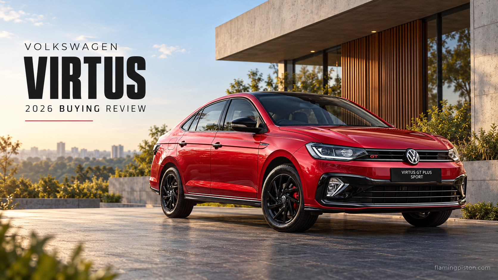

Volkswagen Virtus Review 2026: 1.0 TSI or 1.5 TSI?

AI editorial illustration: FlamingPiston.
The Virtus is worth considering if you want a sedan and are deciding how much engine you actually need. The 1.5 TSI attracts attention, but the 1.0 TSI deserves its own evaluation. Paying for the stronger engine is sensible when you value its additional performance; it is less compelling when most journeys are short, crowded and unhurried.
Specification-based buying review, checked 23 October 2026. We have not road-tested this vehicle for this article. Quoted figures are manufacturer information; recommendations are our editorial assessment.
Key Specifications at a Glance
| Item | Published information |
|---|---|
| Official range entry | ₹10,70,900 ex-showroom at this check |
| 1.0 TSI | 115 PS; 178 Nm |
| 1.5 TSI | 150 PS; 250 Nm |
| Published ground clearance | 179 mm, unladen |
What the Current Price Actually Buys
Volkswagen’s model page listed a starting ex-showroom price of ₹10,70,900 on 23 October. That is the range entry, not the price of a GT Plus Sport or every automatic. The Sport page separately listed the GT Plus Sport 1.5 TSI DSG at ₹19,19,900. These are very different budgets before registration and insurance.
Build the comparison around your chosen gearbox and essential equipment. A lower-priced manual and a top-spec DSG are not alternative quotations for the same requirements. Ask the dealer to show the price of the closest matching trims before judging the engine premium.
1.0 TSI Versus 1.5 TSI
The published figures give the 1.5 TSI an advantage of 35 PS and 72 Nm. Those differences explain why it belongs on a performance-minded shortlist, but they do not measure overtaking times, responsiveness or fuel consumption in your use. This review contains no independently timed acceleration run.
We would begin with the 1.0 TSI for a cost-conscious mixed-use purchase. The 1.5 TSI is the more relevant choice if you actively want the stronger engine and can afford it without stretching the ownership budget. Test both with the air conditioning on and your usual passengers aboard.
The Automatic Decision
Volkswagen lists manual and automatic options with the 1.0 TSI, and a seven-speed DSG with the 1.5 TSI. Do not treat the two automatic choices as identical simply because both have two pedals. Compare low-speed control, reversing on an incline and how each responds when you request acceleration.
Ask for the maintenance schedule and written warranty terms for the exact powertrain. A review cannot turn a brand reputation into a personal repair forecast. What matters is the coverage you are buying, the exclusions and the cost of scheduled work.
Sedan Practicality: Clearance Is Only One Number
Volkswagen quotes 179 mm of unladen ground clearance. The qualifier matters: passengers and luggage change the operating condition, and the shape of a ramp also matters. Try the driveway or basement entrance that worries you rather than assuming one brochure number settles it.
Bring a suitcase or pushchair when checking the boot. A useful capacity figure does not guarantee that a bulky object passes through the opening. Rear-seat access also deserves attention if elderly relatives will use the car regularly. These everyday details can outweigh the attraction of a stronger engine.
Who Should Buy It, and Who Should Compare Further?
The Virtus offers a clear choice between a lower-cost turbo-petrol route and a more powerful one. That is its strongest purchase argument in this assessment. The potential compromises are the higher bill for the desired powertrain, the sedan loading aperture and whether the seating position suits your family.
Compare it with the Skoda Slavia if you want another sedan reference. Compare with an SUV only if you genuinely prefer the access or seating arrangement. Buying a body style you do not enjoy to follow a trend is no better than buying a bigger engine you will not value.
Flaming Piston's Take
The 1.0 TSI should be the starting point for a value-led Virtus shortlist. Move to the 1.5 TSI because you want the additional engine capability and have tested it, not because the internet treats every other version as a compromise. Budget for the complete ownership package before choosing the trim.
FAQs
What is the Virtus starting price at this update?
Volkswagen’s main model page listed ₹10,70,900 ex-showroom; confirm the current quotation for your variant.
How much more powerful is the 1.5 TSI?
Published outputs differ by 35 PS and 72 Nm compared with the 1.0 TSI.
Is this a hands-on Virtus road test?
No. It is a specification-based buying review checked on 23 October 2026.
Related Reading
Sources: Volkswagen India. Official model pages, specification tables and available manufacturer brochures checked 23 October 2026.
Back to reviews